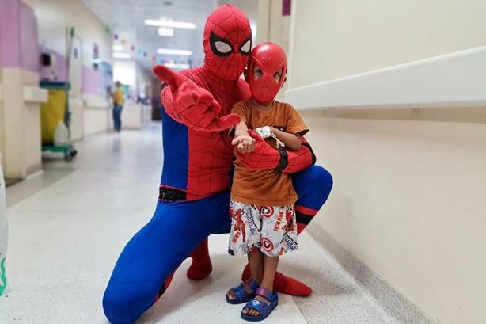
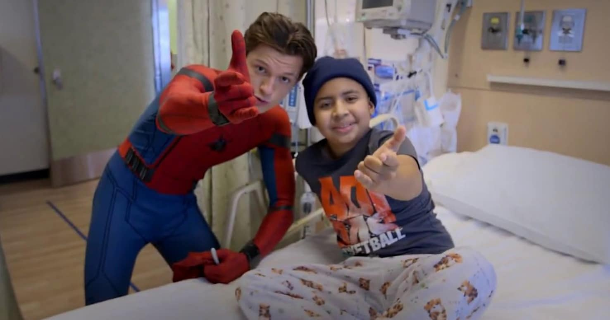

Se você acha que o Homem-Aranha é só um herói de quadrinhos, tá na hora de ver além
O impacto dele na vida real é gigante. A famosa frase criada por Stan Lee, "com grandes poderes vêm grandes responsabilidades", saiu das páginas e virou quase uma regra de vida pra muita gente. Não é só sobre superpoderes, é sobre como a gente usa o que tem no dia a dia.


O mais incrível é que o Peter Parker é gente como a gente. Ele erra, passa perrengue, tem conta pra pagar e ainda tenta fazer a coisa certa. Isso faz com que fãs do mundo todo se identifiquem de verdade, porque não é sobre ser perfeito, é sobre continuar tentando.
Nos filmes, tipo Homem-Aranha (2002) e Homem-Aranha no Aranhaverso, a gente vê versões diferentes do herói, mostrando que qualquer pessoa pode usar a máscara. Isso abriu espaço pra mais diversidade e representatividade, algo que faz muita diferença na vida real.
E não para por aí. O Homem-Aranha também inspira ações boas de verdade. Tem gente que se veste como ele pra visitar hospitais, ajudar crianças e espalhar esperança. Sem falar que até cientistas já olharam pras teias dele como inspiração pra novas tecnologias.
Ser fã do Homem-Aranha é mais do que gostar de um herói. É carregar uma ideia. Fazer o bem mesmo quando é difícil. Porque no fim, todo mundo pode ser um pouco herói também.